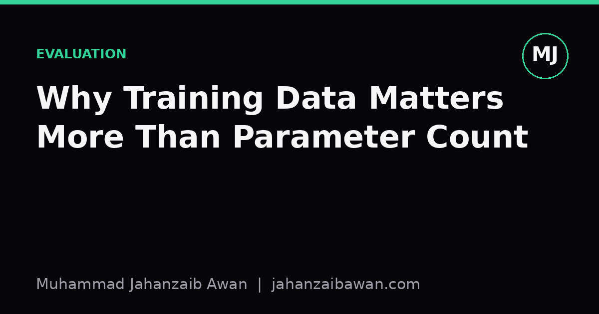

Why Training Data Matters More Than Parameter Count
Bigger models get the headlines, but the data a model was trained on usually decides what it can actually do.

The number everyone quotes is rarely the one that matters
Whenever a new model is announced, the parameter count is usually the first thing people repeat. Seven billion, seventy billion, it sounds like a measure of intelligence, something you can rank models by the way you rank processors by clock speed. I understand the appeal: it is a single number, it is easy to compare, and it correlates loosely with capability across a family of models trained the same way on similar data. But that last clause is doing all the work, and it is the part everyone drops when they repeat the headline figure.
Parameter count tells you the capacity of a model, the size of the function it can represent. It tells you almost nothing about what that function has actually learned to do. A model with ten billion parameters trained on a narrow, repetitive, poorly filtered corpus can be comprehensively outperformed on a given task by a much smaller model trained on data that was curated with that task in mind. Capacity is a ceiling, not a guarantee. What fills the space beneath that ceiling is the training data, and that is where the real differences between models live.
This matters practically because capacity and data quality get conflated in decision-making. Teams choose a model because it is the largest one they can afford to run, assuming size is a proxy for competence on their specific problem. Then they are surprised when it hallucinates domain facts, misunderstands jargon, or fails on inputs that look nothing like its training distribution. The disappointment is not a mystery once you stop thinking of parameter count as the main variable.
A worked intuition: two models, same size, different diets
Imagine two models, both with roughly the same number of parameters, both trained for a comparable number of steps. Model A was trained on a broad scrape of general web text with light filtering. Model B was trained on a smaller but carefully assembled corpus: well-edited prose, technical documentation, code with accompanying explanations, and a deliberate removal of near-duplicate and low-quality pages. Model B has seen fewer unique tokens overall, yet it reliably produces more coherent technical explanations and makes fewer basic factual errors in its domain.
The reason is not mysterious once you think about what the models are actually doing during training. Both are learning to predict the next token given the preceding context, and their internal representations get shaped by whatever patterns are statistically dominant in what they are shown. If Model A's data is full of repetitive boilerplate, spam, and low-signal text, a large share of its training budget gets spent modelling noise rather than useful structure. Model B spends its smaller budget almost entirely on signal, so each parameter ends up doing more useful work.
You can see a version of this trade-off in how models perform on specialised tasks after fine-tuning. Suppose you fine-tune both models on a few thousand examples of a legal reasoning task. Model B, with a pretraining history that included more structured, carefully written text, tends to adapt faster and generalise better from the same small fine-tuning set, because its starting representations already carry some of the structure the new task needs. Model A, even with more raw capacity, may need substantially more fine-tuning data to reach the same level, because it has to unlearn habits picked up from noisier pretraining text before it can learn the task properly.
None of this means parameter count is irrelevant. Within a single training regime, on the same data, more parameters generally do help, particularly for tasks that require holding more context or more complex relationships in mind at once. The point is narrower and more useful: comparisons across models only make sense when you can say something concrete about what each one was trained on. A number alone tells you almost nothing about which model will serve you better.
What this means for evaluation and choice
If training data is the dominant factor, then evaluation has to look past the spec sheet. I would rather know the rough composition of a model's training corpus, how recent it is, whether it includes the kind of domain text I care about, and what filtering was applied, than know its exact parameter count. In practice this information is often incomplete or withheld, which is itself useful signal: if a provider cannot tell you anything meaningful about the data, you should treat claims about general capability with real scepticism.
There is also a leakage trap worth naming directly. If you are evaluating a pretrained model on a benchmark, and that benchmark's text or close paraphrases of it were plausibly present in the training data, you are not measuring generalisation, you are measuring memorisation. This is a much bigger risk with models trained on enormous, loosely documented web scrapes than with models trained on smaller, well-tracked datasets, precisely because the scale and opacity of the former make contamination hard to rule out. A high benchmark score from such a model should be treated as weaker evidence than the same score from a model whose training data provenance is well documented.
A sensible evaluation strategy, then, treats parameter count as a minor footnote and training data as the headline. Ask what the data was, how it was filtered, how old it is relative to your use case, and whether your own test questions could plausibly overlap with it. Hold out a genuinely fresh evaluation set, ideally built or dated after the model's training cutoff, so that strong performance reflects real capability rather than recall of something the model has already seen. Favour smaller, well-documented models over larger, opaque ones when the task is specialised, because a tight fit between data and task usually beats raw scale.
The practical takeaway is simple to state even if it is awkward to act on, since good documentation of training data is not always available: stop treating parameter count as a shorthand for quality, and start asking what a model was actually shown before you trust what it tells you.